Праздники в Библии · Путешествия · Галереи
Восхождение в Иерушалаим
Как сегодня израильтяне смотрят на заповедь восхождения трижды в году в город Великого Царя?
Алла Варенцов
Почему они так стремились туда во все времена? Из всех концов Святой земли-Эрец Исраэль, и стран диаспоры иудеи шли на поклонение в Храм в дорогой их сердцу Иерусалим. "Ба-шана а-ба бИерушалаим" - "в следующем году в Иерусалиме" – вечная надежда рассеянных по миру сынов Иакова.
«Никто не пожелает земли твоей, если ты будешь являться пред лице Господа Бога твоего три раза в году»-заповедь Торы, полученная Израилем три с половиной тыс. лет тому назад. И пусть мир кардинально изменился с тех пор, мы пешком повторяем восхождение своих древних предков. Почему? Что нас тянет туда?
На пути мы видим те же горы, поросшие лесами, древние миквы – водоемы для очищения и освежения путников. Они сохранились, несмотря на тысячи лет ветров, дождей и испепеляющего солнца. Современные путники, мы видим то же, что и древние паломники: те же оливы и смоковницы, те же камни и солнце, восходящее над городом, сохранившим свое древнее очарование. «Если я забуду тебя, Иерусалим, забудь меня десница моя» – говорит Псалмопевец. Дух Божий влек его во дворы храма Господня, место, где он был счастлив.
Кто то скажет: "Восхождение в Иерусалим – ветхая, забытая заповедь." Но дух мой жаждет!
***
Эфраим Калиш
Мое первое в жизни восхождение в Иерусалим.
Много раз бывал в Иерусалиме, но это восхождение запомню навсегда. Первый раз в жизни я поднимался в Святой город пешком, подобно отцам нашим. Три еврейских праздника Песах, Шавуот и Суккот не случайно названы - РЕГАЛИМ / множественное число от регель / ивр. - нога /, потому что пешком отцы наши поднимались в Иерусалим на поклонение Господу Цеваот и праздновали пред Ним. Как написано: "Куда восходят колена, колена Господни, по закону Израилеву, славить имя Господне" / Пс.121:4 /.
И хотя мы не прошли весь путь из Хайфы до Иерусалима своими ногами (по подсчетам сведущих людей это могло бы занять минимум две недели в одну сторону), волнение сопровождало меня с самого начала, до момента, когда мы поднялись в Город Царя.
Весь наш путь пролегал по владениям колена Еhуда в Иудейских горах. По крайне мере та часть пути, которую мы проделали пешком, повторяла путь, которым восходили в Иерусалим отцы наши тысячи лет назад, особенно там, где мы двигались по вади / арабское название русла высохшей реки /.
Наше восхождение мы начали по-близости от поселения в Иудейских горах, которое две тысячи лет назад называлось Эмаус / шестьдесят стадий от Иерусалима /. Тогда ученики Иешуа брели расстроенные из Иерусалима и были настигнуты Мессией по дороге / Лук.24:13-15 /. Нас Он сопровождал от самого начала, через Эмаус - до горы Сион.
Немного позже, когда соберусь с мыслями, дополню описание своих переживаний. Обязательно сделаю видео сюжеты и заметки здесь в блоге. Сейчас, когда во мне все бурлит, спешу поделиться некоторыми своими фото впечатлениями.
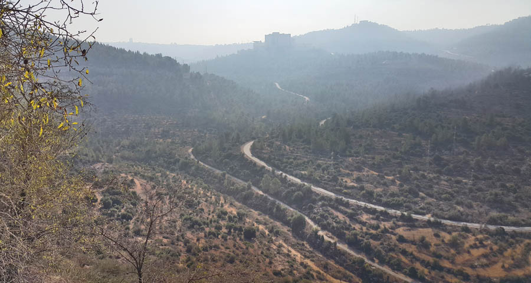
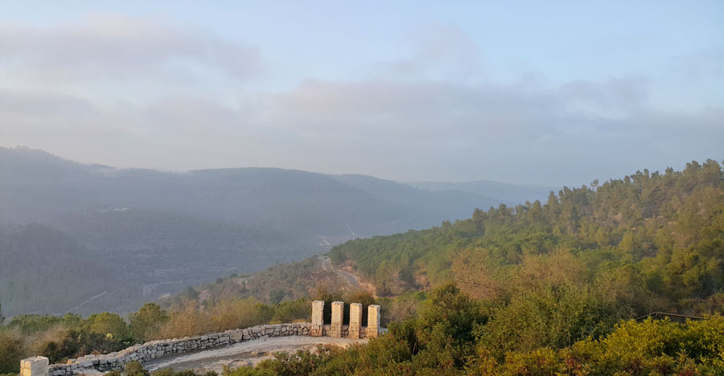
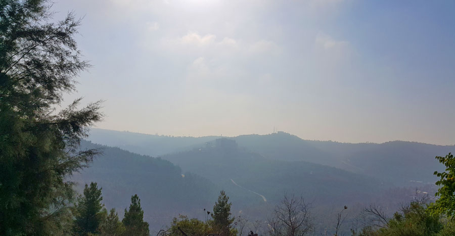
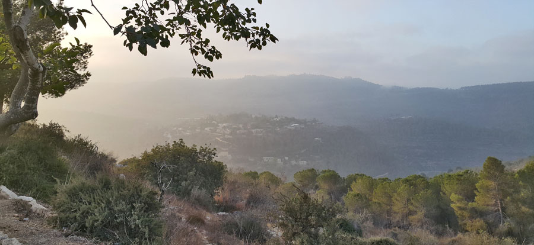
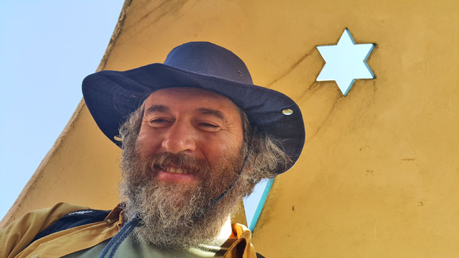
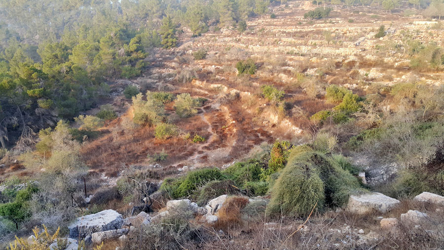
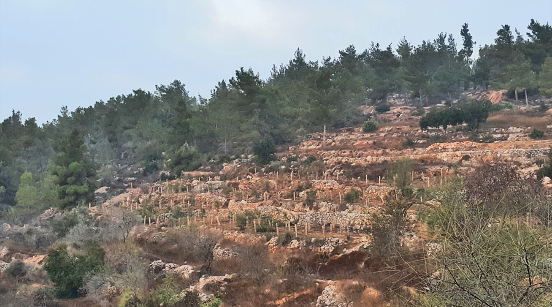
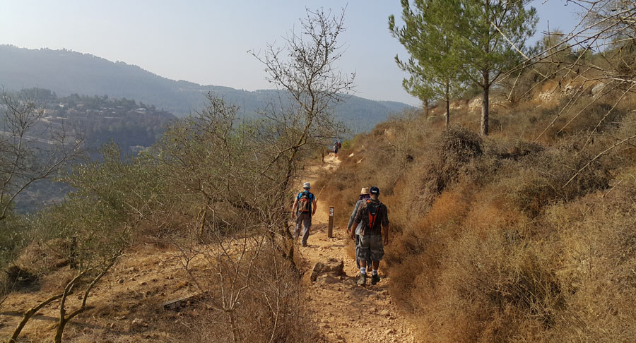
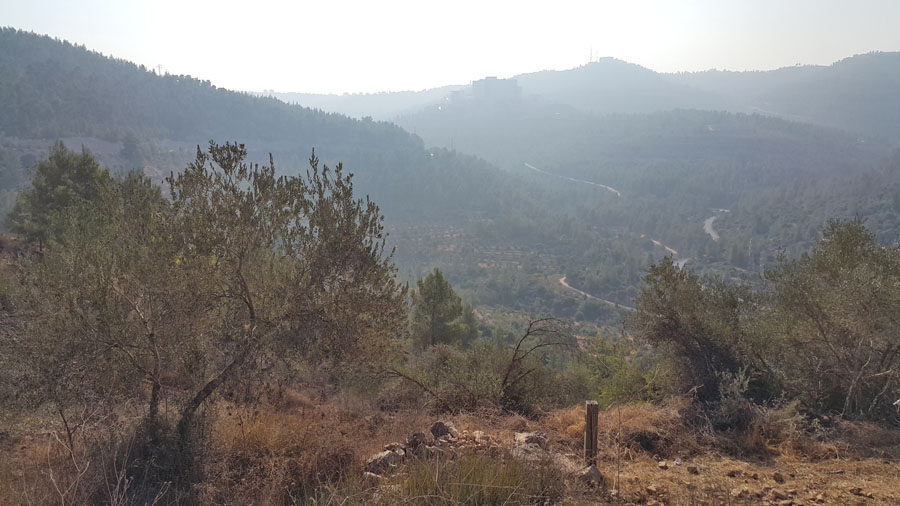
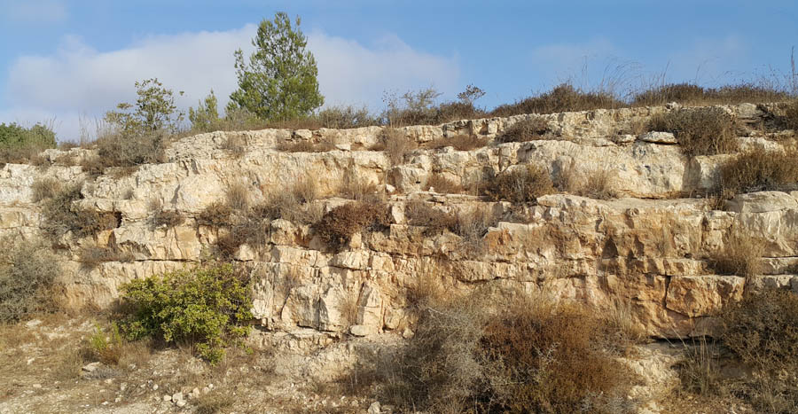
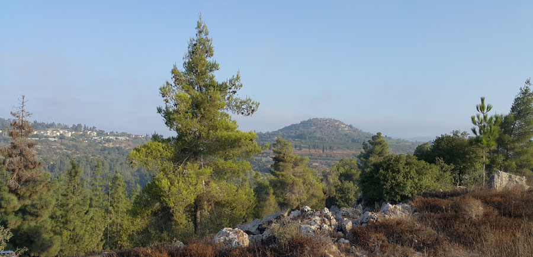
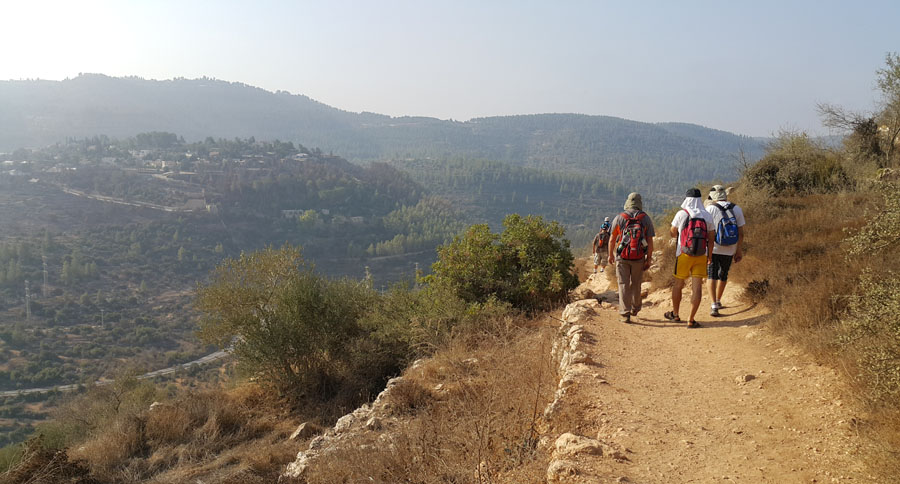
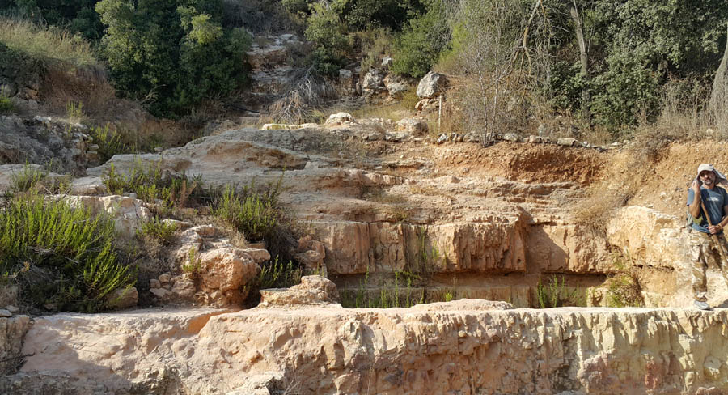
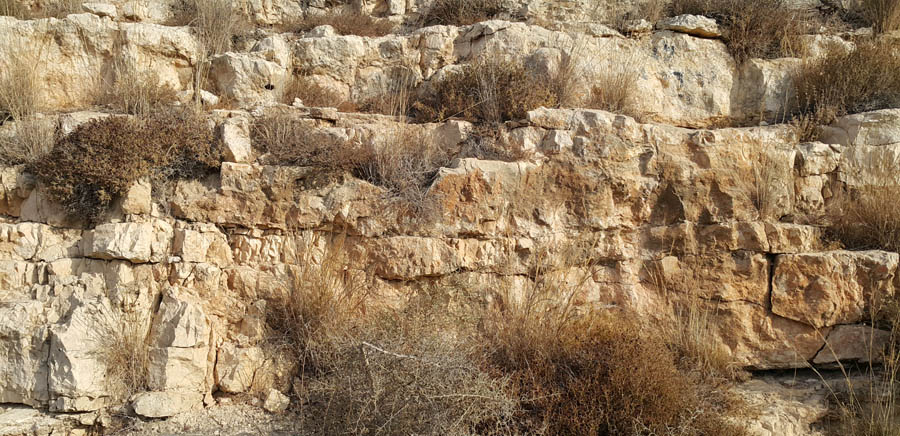
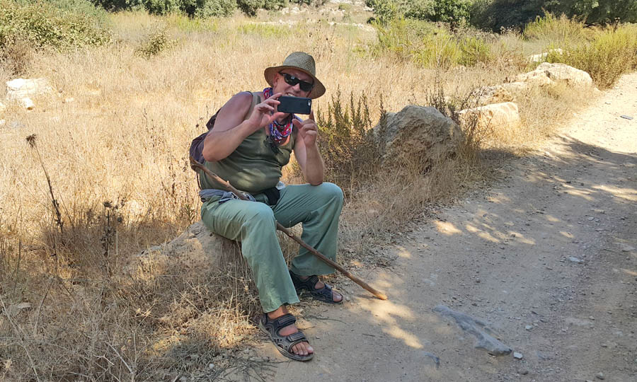
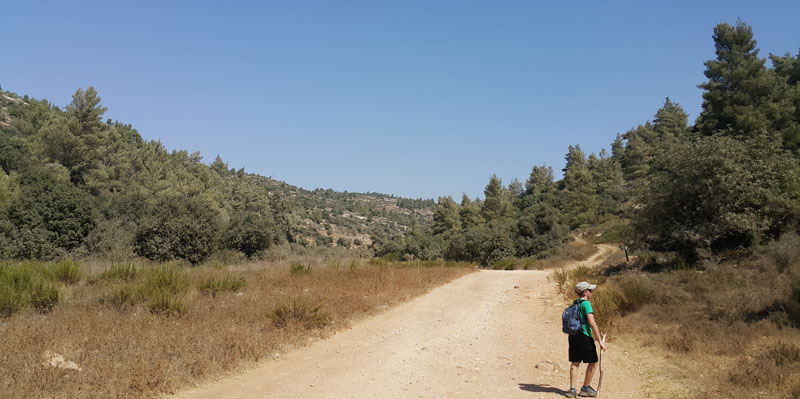
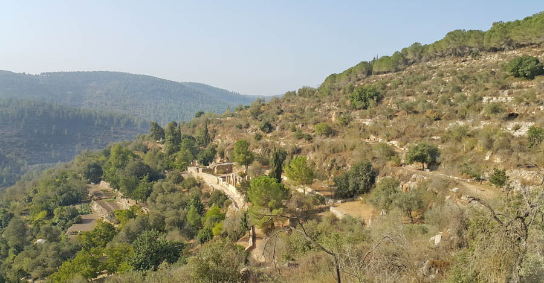
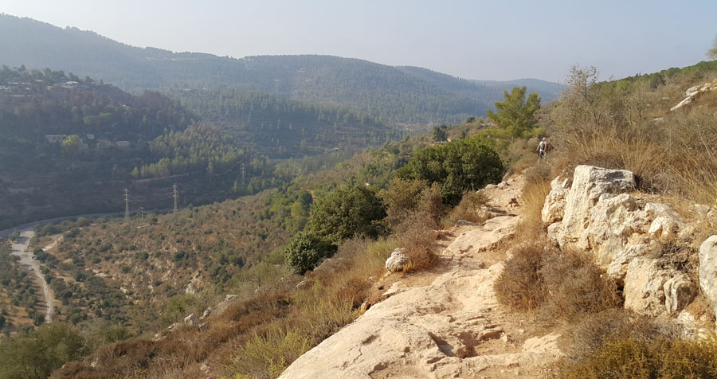
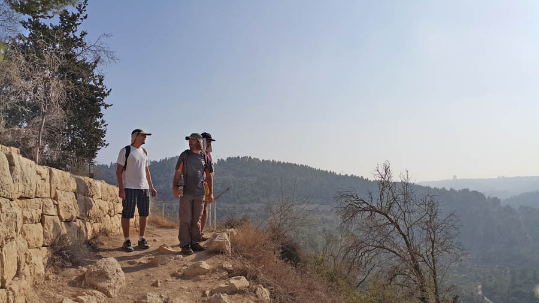
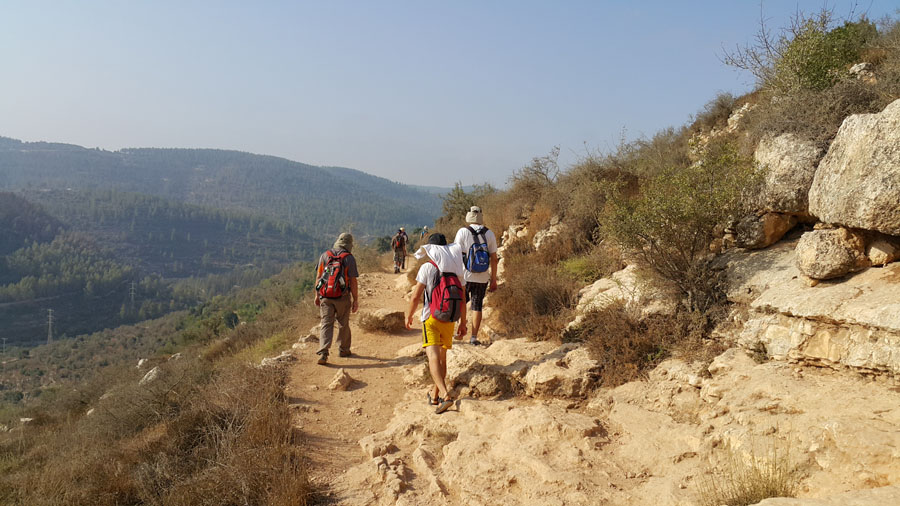
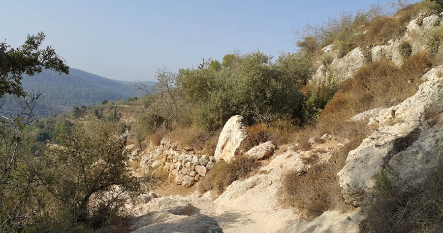